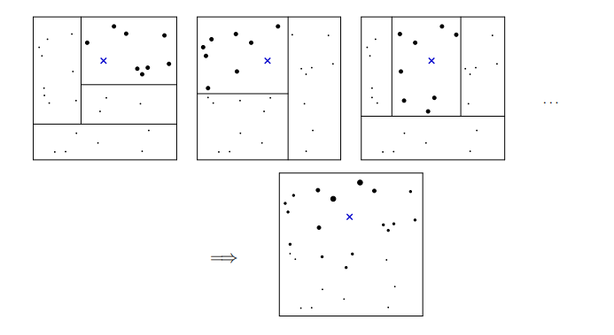

Abstract
The COVID-19 pandemic has significantly impacted various facets of human life, including psychological well-being. This study replicates and extends the study by Choi et al. (2022) using the Generalized Random Forest (GRF) method to analyze the causal effects of COVID-19-related events on well-being. Utilizing longitudinal data (N = 69,986) from an online survey conducted in South Korea during the early pandemic (January 1 – April 7, 2020), this study investigates the treatment effect of COVID-19-related events on well-being. The GRF method, which integrates machine learning techniques for estimating both average treatment effects and heterogeneous treatment effects, is employed to provide a nuanced understanding of these impacts. The findings reveal that the COVID-19 outbreak and the implementation of social distancing significantly affected well-being. The outbreak was associated with increased satisfaction with life (SWL) and decreased meaning in life (MIL). The models also identified significant heterogeneity in treatment effects, with moderate evidence that extraversion has contribution to this heterogeneity. Social distancing, on the other hand, led to increased negative affect and stress, and decreased SWL, positive affect, and MIL. By leveraging the capabilities of GRF, this study offers comprehensive insights into the complex interplay between pandemic-related events and individual psychological responses.
Background
Choi et al. (2022) tracked well-being in South Korea through the early pandemic and reported that extraverts declined more than introverts after social distancing was implemented, an interaction estimated with polynomial regression and mixed-effects models. Re-examining that question with generalized random forests (Athey, Tibshirani & Wager, 2019) changes three features of the analysis. The estimand becomes the conditional average treatment effect τ(x), a function of covariates rather than a constant, so subgroup structure need not be hypothesized in advance as an interaction term. Functional form is not committed to in advance, so nonlinear effects and higher-order interactions among many covariates can be represented. And the analysis is framed within an explicit potential-outcomes estimand rather than an associational one.
Methods
Data and treatment definitions
The analysis is a secondary analysis of the longitudinal survey from Choi et al. (2022), publicly archived on OSF and collected in collaboration with the Center for Happiness Studies at Seoul National University: 69,986 participants and 130,798 observations between January 1 and April 7, 2020. Outcomes are satisfaction with life, positive affect, negative affect, meaning in life, stress, and a composite well-being index, each on an 11-point scale.
The study window divides into three phases, giving two separate treatments — the outbreak (phase 1 to 2) and the implementation of social distancing (phase 2 to 3) — each fitted in its own set of forests rather than folded into a single time variable. Extraversion enters as the moderator of interest, as a composite and as its three facets, so that the analysis can indicate which facet is associated with any heterogeneity. Because causal forests do not natively accommodate repeated responses, observations were averaged within participant within phase, following Athey and Wager's treatment of unequally sized clusters, with subject ID entered as a covariate.
How a forest locates the comparison group
A causal forest estimates the effect at a point in covariate space, which requires deciding which other observations are similar enough to that point to inform the estimate. Rather than fixing a neighborhood in advance, the trees define one: each tree gives weight to an observation according to how often it lands in the same terminal leaf as the target point. Because the trees are split to maximize heterogeneity in the effect, the resulting neighborhood is adapted to the quantity being estimated.

The estimator

Inference and interpretation
A forest returns a distribution of estimated effects whether or not heterogeneity is present, so interpretation was conditioned on a formal test at each stage. The calibration test regresses the doubly robust scores on the mean and differenced forest predictions, returning one coefficient for the average effect and one for heterogeneity. Heterogeneity was examined only where the average effect was calibrated, and the heterogeneity-interpretation tools were applied only where the heterogeneity coefficient was significant; several models stopped at the first stage, and this is reported as such.
Where interpretation proceeded, three methods were used together: variable importance
(depth-weighted split frequency, which indexes contribution to heterogeneity because splits
are chosen to maximize it), best linear projection of the conditional effects onto the
covariates, and a comparison of covariate means between the high- and low-effect halves of the
sample. Each is partial on its own; in particular, a null best-linear-projection result
indicates the absence of a linear relation rather than the absence of a relation. Analyses
were carried out in R with the grf package.
Results

For the outbreak contrast, three outcome models passed the average-effect stage. Satisfaction with life increased slightly (+0.053, p = .006) and meaning in life decreased (−0.071, p = .001); both then showed significant heterogeneity (p < .001), so the interpretation tools were applied to those two.

The three interpretation methods converged only partially. Variable importance placed all four extraversion measures above sex and region, and the median-split comparison found extraversion higher in the high-effect group, while the best linear projection identified only age and sex. Since the projection detects linear relations between a covariate and the conditional effect, the pattern is consistent with extraversion contributing to heterogeneity in a form that is not linear.
Relative to the original study, the negative effect of the outbreak on meaning in life and the broad unfavourable effect of social distancing both replicated. Satisfaction with life increased after the outbreak here, in the opposite direction to the original report, which is compatible with the original reporting a slight decline in a composite index within which subscale effects may offset. The extraversion findings also differed: heterogeneity appeared in the outbreak effect rather than in the social-distancing effect. The approach was subsequently extended in a follow-up analysis of a related pandemic-era question, and the work was taken to the level of the undergraduate thesis.